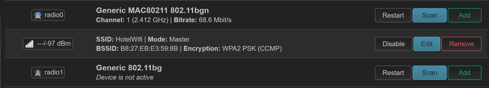
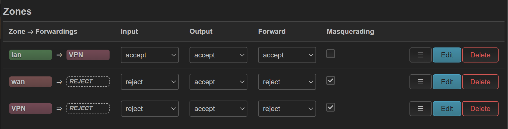
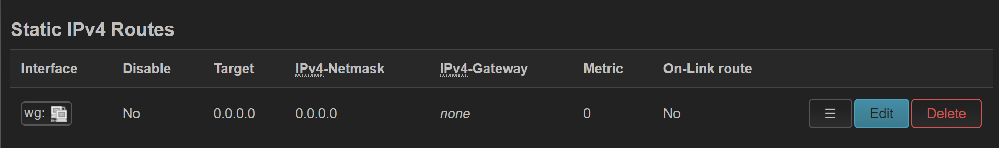

Hotel Wifi Condom¶
Background¶
I recently needed to go on holiday, and was staying in a hotel with WiFi. Out of an abundance of paranoia, I decided to try setup a “router” that could sit between my devices and the hotel network.
Goals¶
The main goals were:
Setup a NAT’d environment, so the hotel wifi cannot see my devices directly
Connect to the hotel Wifi OR ethernet
The auxiliary goals were:
Tunnel all traffic through Wireguard or similar VPN.
Starting Point¶
Started with a Raspberry Pi 3.
Firmware: https://openwrt.org/toh/raspberry_pi_foundation/raspberry_pi#installation
After installation and gaining access (ethernet, static IP, etc), I created a WiFi network and gave it appropriate security.
From a google search, I was under the impression that the Pi could simultaneously transmit and connect to a wireless network, but when I tried that, it was incredibly unreliable and dropped wireless constantly. I got back in and disabled that, and then added a USB wifi adapter. Unfortunately, it wasn’t detected out of the box, and I had to install the kernel drivers (opkg update && opkg install kmod-rt2800-usb).
Once that was done, I could connect the wifi and also run the wifi address simultaneously.
I then moved the ethernet to the WAN zone, and made it a DHCP client.
When I arrive at the hotel, I could use the the radio1 “Scan” button to add the hotel wireless. (In practice, this wasn’t very useful, as the hotel wifi was garbage. It did work, it was just super slow. I used ethernet instead).
TravelMate¶
Github Docs: https://github.com/openwrt/packages/blob/master/net/travelmate/files/README.md
opkg update && opkg install travelmate luci-app-travelmate
Use this for connecting to wireless networks. Easier to manage, and can deal with captive portals. To do captive portals properly, you have to disable wireguard/VPN and allow traffic to go directly to the wireless network, complete the captive portal, and then re-enable VPN. Travelmate can supposably handle the VPN, but I dont know how this works.
USB Tethering¶
Follow: https://openwrt.org/docs/guide-user/network/wan/smartphone.usb.tethering
Wireguard¶
I already have a wireguard server that I use as a VPN. I created another set of keys for my “Travel router”, and then used the config on the router.
Install wireguard:
opkg update && opkg install luci-app-wireguard
Add a wireguard interface, using the config from the server to set it up. Add a VPN Zone and put the wireguard interface into it. Firewall and Routing Zones were setup like:
VPN was the Wireguard zone, WAN and LAN are the default zones. (I am not an expert, this may not be correct, but it does work).
Misc¶
Disable SSH and WebUI from the WAN interfaces.
Statistics??
- MSS Clamping: Under Network > Firewall, click -edit- beside the LAN -> VPN zone. The MSS Clamping toggle is in there
This is required to make it more reliable (Reddit app showed this problem initially)
- Wireguard failure to re-connect. Still have no idea what the cause of this is, and I have to restart the WG server side.
Caused by anti-replay on the wireguard server.
Fix is to restart wireguard after NTP sync: https://forum.openwrt.org/t/initiate-wireguard-after-ntp-success/14751/2
mkdir -p /etc/hotplug.d/ntp cat <<EOT > /etc/hotplug.d/ntp/90-wireguard #!/bin/sh [ \$ACTION = stratum ] && /etc/init.d/wireguard restart EOT
Conclusion¶
This seems to have worked so far, and I wrote this via the PiWifiCondom.
Whether it is as secure as I would like, I am not sure, but it definitely seems better than just raw dogging a random wifi network.